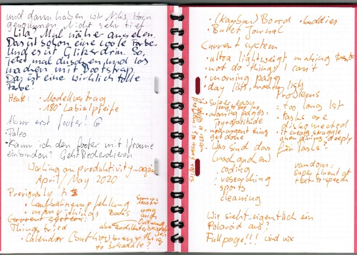

Working on productivity ... again
April/May 2020
Background
My school career recommendation by the end of primary school said that
I was very creative and interested in almost everything, have
difficulties following goals, and have to learn to organize myself
better.
And one of the things that happened a few years later was that I made
my problem into a hobby and developed an interest for management,
partly as a new interest and partly as a survival strategy, because
I'm still creative and interested in many things, and have to be well
organized in order to do many of those.
By 'making it into a hobby' I mean that I read books about management (and self-management) for enjoyment. I'm a certified ScrumMaster and am considering studying human resources management because it would actually interest me. Also as an activity, management is a typical thing I do. When a hobbyist group forms around me, I often end up being involved in the planning. I like it and things work better when I help organize.
Something in me likes order, for instance I have
self-designed and 3d-printed book shelf signs, but I'm also a chaos person and the structures I build for myself
need to be robust to accommodate for a daydreamer.
A main challenge for me is having too many projects and things on my
mind, and in order to be productive I need to focus on single-tasking,
practically and mentally. In institutionalized education we are taught
that we need to remember things and otherwise we are worthless. I
think this is harmful, writing good protocols and routinely setting
oneself timers and calendar items is better than trying to remember
things.
Some things I've tried (successfully)
Important principle: single source of truth
Different media (calendar, board, todo-app ...) have their advantages but I think it is very important having one main document that 'is right'. At programming this is often called 'single source of truth'. Throughout the years I've been going back and forth between prioritizing either a calendar, a (kanban? not exactly.) board or lists of various sorts. However, it is important to know which one is the main document at a given point.
Creative writing
Calling creative writing a productivity tool might sound strange at first but the amazing thing about it is that it makes my subconscious speak and brings out the dreamer-aspects and actual problems that would otherwise block my productivity. (And once In know them I can decide to ignore it or solve problems.) Also the self-awareness that creative writing brings, helps me be grateful about my thoughts, feelings and actions and makes me more happy in general.
I started creative writing in 2015 with the book The Artist's Way, which contains a lot of hard to bear esoteric bullshit but the instruction for writing were very helpful to me. It is called 'morning pages' and in the beginning one is supposed to write three pages each morning. This is great to develop a habit and meanwhile I write when ever I feel like it and it isn't necessarily three pages but I'm done when I spit it out, what ever it was.
Typically, free writing is part of a planning process. Look at the image, the first third of the left page is the end of the morning pages that day, then I did a little bit of random planning and then (lowest third of the left page) I started the outline for this article. The writing helps me to tidy up my mind, which is very helpful before or while doing conceptual things. Often tasks come up during writing, and then I use a marker or different color to continue writing and find the task back later.
Bullet Journal
Bullet Journal can be described as a todo-app as a book. By the time I was starting to use it (in 2016), I was already enjoying writing with fountain pens, which made the whole 'book instead of app' thing very inviting. It turned out immediately though that I had to adapt the protocol and use a computer calendar instead of the calendar in the book, because I reschedule things often and on a hand-written medium that creates a mess, and digital calendars have the advantages that links and attachments can be added to calendar entries, which is very practical when doing various digital activities.
Often (but not daily) I make myself a task list for the day ('Day Log') but a much more important learning from bullet journal is using notebooks with enumerated pages and an index. That helps writing things 'into the chaos' and still find things back.
Analog is for early stages
For many years I considered the computer science course I had at high-school to be worthless (we learnt formatting Word documents and some Turbo Pascal). But when I started writing OpenSCAD code in 2018, I noticed that I've actually learnt something very useful at computer science: writing pseudocode by hand.
At the beginning of a thing, when main aspects about it are still
unclear, one might consider it to be analog. Digital means that the
thing being measured and expressed with numbers and categories is
already built-in, which is not the case for what I call analog here,
where categories and measures can still be invented, negotiated,
found. At a beginning, the field is open, the page is blank, and so it
is great starting with pen and paper, where no categories need to be
picked before starting.
(Further explanation: a category would mean picking a specific app to
work in, a framework or a programming language. There is no blank page
software, one can only reasonably work with software when one already
knows whether it is going to be a novel or a painting.)
Since I, as a prototyper and eternal learner, am at home at early stages, I use pen and paper a lot.
Digital is for elaboration and version control
Refining works best in increments. As soon as a brain child has an overall shape and a set of main ideas, it is time to move to a medium where changes can be applied many times and where there is an 'undo'-button and version control. (Obviously that is impossible for most works of analog craft like woodwork or blacksmithing, but this article is about self-management and not about woodworking.)
Those thoughts about early stages and refinement are influenced by a book about creative techniques, where a main idea was that techniques are either 'divergent', opening, brainstorming, allowing everything, or 'convergent', collecting, judging, categorizing. And even if I didn't learn many concrete techniques from the book, deliberately using divergent and convergent strategies at the right points in time stuck with me, and deliberately using paper and digital media has a lot to do with that.
The board
Guess what, as an agile person I put stickies on walls. Kanban boards
are great for group projects but as a private person I use a board
differently. It is home to non-urgent and non-actionable tasks, to 'at
some point in the future', to dreams.
And my board has a special category: 'I need help with that'. When I'm
stuck with something, I put a stickie in the 'I need help with that'
row, which normalises asking for help and keeps me from forgetting it,
especially when it is non-actionable for instance when I don't have a
concrete person to ask in that case.
Current System
My current way to organize my things is motivated by facilitating single-tasking by making it super lightweight to create tasks for later. I don't try to remember things, if I forget something it probably wasn't important. Usually I have my laptop with me, and then I write it directly into my calendar, and otherwise I write it into my bullet journal or what ever I have around. If I write it onto a random piece of paper, I have a place in my bag where I know it won't get lost.
I strongly avoid doing things that unnecessarily drain me. There is no shame in getting help.
Writing morning pages is something I don't do every day but I have to do it at least three times a week in order to be happy-ish and productive.
On days with many smaller tasks I make a list (day log) in the morning.
Usually I schedule tasks for four hours a day.
In about two thirds of the days I actually do all the things from the day log.
I do schedule sports and maintenance/cleaning tasks as well. For instance I wouldn’t clean my windows in years if it wouldn’t appear in my calendar at some point because otherwise there would always be more important things
What are the tasks
Pros and cons
Pros
- It is a (for me) very easy to follow system.
- It doesn't have a lot of overhead like grooming task lists and re-evaluating importance. That means I spend most of the time with what I actually wanted to to instead of office games.
- Important but non-urgent tasks get done. (This is a goal in management in general, getting to a point where one isn't driven by urgent things but by important things.)
- It makes it easy to say no to peoples unreasonable requests, since I have an obviously full calendar. ('Shall I create a task for that in a month?')
- Writing morning pages gives me joy and gratitude.
Cons
- The task list is long, currently my calendar is booked for five weeks, and I prefer a planning horizon of two to three weeks.
- The tasks end up in an unconnected order.
- By the point I find a task in my todays list, it often is not actionable and then it takes longer or needs to be re-scheduled.
- That my calendar is always booked for the soon future makes it complicated to dive deep into a new thing right now when it is shiny and exciting. In that case I need to decide whether I want to move around a couple of calendar items or whether the new shiny thing has to wait for a bit.
Other productivity related things I've learnt recently
I'm more fluent at text-to-speech than I previously had been aware of. It is not only that I know the keyboard-shortcut on my computer but I also use text-to-speech without even thinking about it, and a computer that doesn't have text-to-speech accessible through keyboard shortcuts is very unappealing to me, which might be another reason why I'm not interested in using a smart phone or tablet.
Text last updated: June 10th 2020